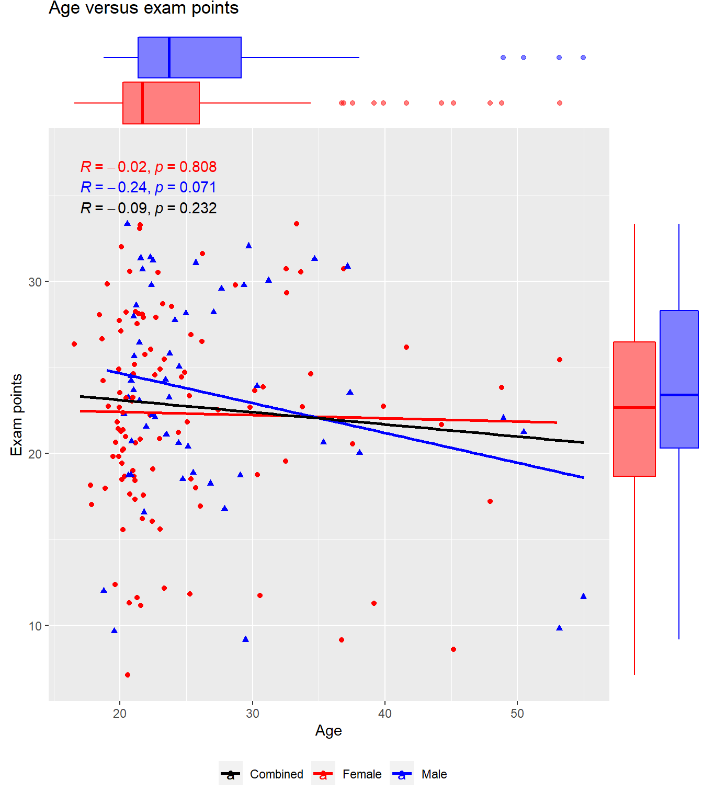
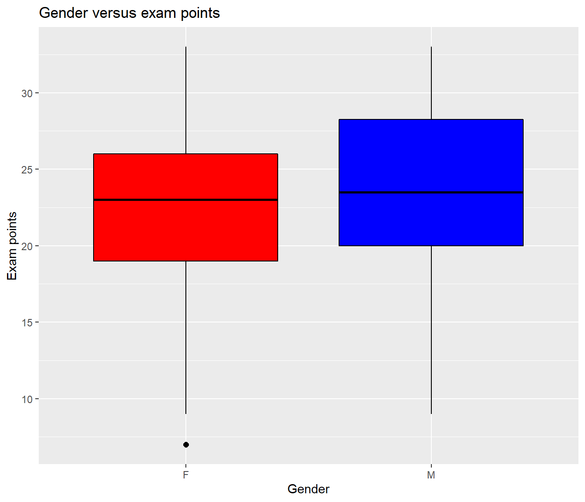
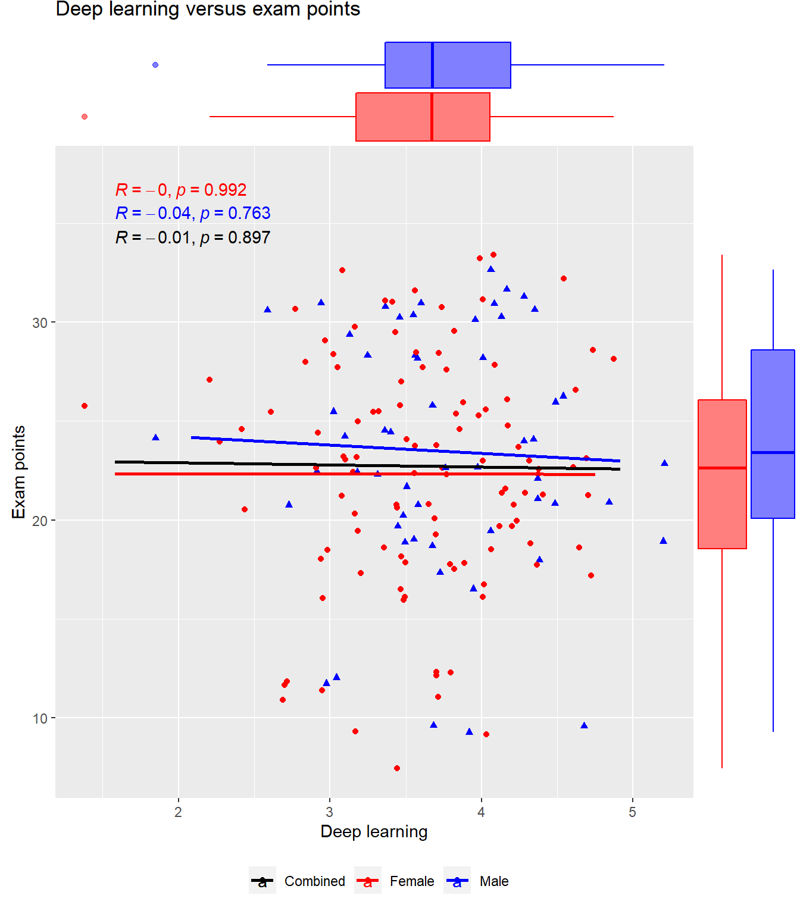

Linear regression
In the following exercise we inspect an example data set for linear correlations using R. First we inspect the data set and then we select three most promising variables for analysis with multiple linear regression.
You can focus on specific parts of the data analysis by topic below.
1: Data description
Description of data
The data set used this exercise has been previously parsed from this file using an R script available here.
The data consists of students who underwent a statistics course in 2014 to 2015. Their global attitude toward statistics and learning approaches were recorded with the aid of surveys. Finally the exam points for the course were also recorded for each student. A more exhaustive metadata is available here.
For an explanation of the individual variables, please, refer to the following:
| Variable name | Explanation |
|---|---|
| gender | Gender of the student encoded as “M” or “F” |
| points | Points from the course exam |
| attitude | Global attitude towards statistics on a scale of 1-5 (higher = better) |
| age | Age of the student |
| deep | Deep learning approach on a scale of 1-5 (higher = more deep learning approach) |
| stra | Strategic learning approach on a scale of 1-5 (higher = more strategic learning approach) |
| surf | Superficial learning approach on a scale of 1-5 (higher = more superficial learning approach) |
Exploring the data table structure
Let’s explore the data set using the str() function:
#Read the table from the source file
analysisDataset = read.table("https://raw.githubusercontent.com/MB-Finski/IODS-project/master/data/learning2014.txt")
#Print out the basic structure and dimensions of the dataset
#Please note, that dim() is redundant here as str() already prints out the table dimensions
str(analysisDataset)## 'data.frame': 166 obs. of 7 variables:
## $ gender : chr "F" "M" "F" "M" ...
## $ points : int 25 12 24 10 22 21 21 31 24 26 ...
## $ attitude: num 3.7 3.1 2.5 3.5 3.7 3.8 3.5 2.9 3.8 2.1 ...
## $ age : int 53 55 49 53 49 38 50 37 37 42 ...
## $ deep : num 3.58 2.92 3.5 3.5 3.67 ...
## $ stra : num 3.38 2.75 3.62 3.12 3.62 ...
## $ surf : num 2.58 3.17 2.25 2.25 2.83 ...As you can see the data consists of 166 observations with 7 variables.
Interactive data table
Below you can explore the whole data set interactively. The code is left visible for the purposes of this course, only.
#Draw an interactive data table
library(DT)
datatable(analysisDataset,options = list(columnDefs = list(list(
targets = 1:7,
render = JS(
"function(data, type, row, meta) {",
"return type === 'display' && data.toString().length > 5 ?",
"'<span title=\"' + data.toString() + '\">' + data.toString().substr(0, 5) + '...</span>' : data.toString();",
"}")
))),callback = JS('table.page(0).draw(false);'))2: Graphical overview
Now we wish to perform exploratory (visual) analysis on the data to determine which factors might predict success in the exam among students.
Instead of printing out a rather complex scatter plot matrix including all variables at once, I chose to have separate graphs for each variable.
Below you can see a convenience function that I wrote for creating the individual graphs.
library(ggplot2)
library(ggExtra)
library(ggpubr)
#A convenience function for creating informative scatter plots.
createScatterPlot <- function(predictor,displayName){
#Use custom color scheme for the graphs.
plotColors <- c("F" = "red", "M" = "blue", "Combined" = "black")
#Create the plot with gender as contrast and place the legend at the bottom to save horizontal space.
scatterPlot <- ggplot(analysisDataset, aes(x = predictor, y = points,col = gender, shape=gender,colour=plotColors))+theme(legend.position="bottom")
#Add scatterplot points and prevent point stacking with jitter. Also suppress the separate legend for the gender specific point shapes.
scatterPlot <- scatterPlot + geom_point(position = position_jitter(width = 0.5, height = 0.5))+guides(shape=FALSE)
#Draw the regression lines for both groups (male and female) and print the respective Pearson correlation coefficients
scatterPlot <- scatterPlot + geom_smooth(method="lm", se=FALSE)+stat_cor(method = "pearson", p.accuracy = 0.001, r.accuracy = 0.01, position = position_nudge(x=0,y=4.4))
#Change the aesthetics mappings a little bit to print a regression line for data in both groups
scatterPlot <- scatterPlot + geom_smooth(mapping=aes(predictor,points,colour = "Combined"),method = "lm", se=FALSE, data = analysisDataset,inherit.aes =FALSE)
#Print the Pearson correlation coefficient for both groups. Also adjust the text position so that it doesn't overlap with the previously printed text.
scatterPlot <- scatterPlot + stat_cor(mapping=aes(predictor,points,colour = "Combined"),method = "pearson", p.accuracy = 0.001, r.accuracy = 0.01,inherit.aes = FALSE,position = position_nudge(x=0,y=2))
#Print the x- and y-axis labels and suppress the superfluous legend label
scatterPlot <- scatterPlot + labs(x = displayName,y = "Exam points",colour = "")
#Apply our custom color scheme and readable data labels
scatterPlot <- scatterPlot + scale_color_manual(values =plotColors, labels=c("Combined","Female", "Male"))
#Apply a title for the graph
scatterPlot <- scatterPlot + ggtitle(paste(displayName, "versus exam points", sep = " "))
#Add marginal boxplots for visualizing outliers, distribution, and group differences
scatterPlot <- ggMarginal(p=scatterPlot,type="boxplot",size = 6,groupColour = TRUE, groupFill = TRUE)
#Print the plot.
scatterPlot
}Here you can inspect each graph under its corresponding tab.
Attitude
#Draw the plot using the previously created convenience function
createScatterPlot(analysisDataset$attitude, displayName="Attitude")
Interpretation
Based on this graph, there seems to be a considerable positive correlation between attitude and exam points. Seemingly there may also be minor differences in the distribution of attitude between genders. This should be taken into account if/when any difference is observed between the genders in exam points.
Age
createScatterPlot(analysisDataset$age,displayName="Age")Interpretation
No significant correlations here. The two outliers in the male group cause a trending result which is sure to vanish by excluding these outliers.
Gender
#For a class variable like the gender we want something a little bit different
#Create a box plot with gender vs exam points
boxPlot <- ggplot(analysisDataset, aes(x = gender, y = points, color=gender, fill=gender))+theme(legend.position="none")
boxPlot <- boxPlot + geom_boxplot(outlier.colour="black", outlier.shape=16, outlier.size=2, notch=FALSE)
#Adjust outline color
boxPlot <- boxPlot + scale_color_manual(values=c("black","black"))
#Adjust fill color
boxPlot <- boxPlot + scale_fill_manual(values=c("red","blue"))
#Set proper lables for both axes
boxPlot <- boxPlot + labs(x = "Gender",y = "Exam points", fill = "")
#Set the graph title
boxPlot <- boxPlot + ggtitle("Gender versus exam points")
#Print the plot
boxPlotInterpretation
Based on a visual inspection, there’s likely no major differences in exam points based on gender.
Deep learning
createScatterPlot(analysisDataset$deep,displayName="Deep learning")
Interpretation
No significant correlation here.
Superficial learning
createScatterPlot(analysisDataset$surf,displayName="Superficial learning")
Interpretation
Overall trending negative correlation.
Strategic learning
createScatterPlot(analysisDataset$stra,displayName="Strategic learning")
Interpretation
Overall trending positive correlation.
3: Building the regression model
Based on the exploratory analysis, attitude is obviously the most promising predictor for exam points. The next most promising predictors seem to be strategic and surface learning approaches. Well choose these three for our multiple regression model.
#Create the regression model
multipleRegression <- lm(points ~ attitude + stra + surf, data = analysisDataset)
#Print a summary of the model
summary(multipleRegression)##
## Call:
## lm(formula = points ~ attitude + stra + surf, data = analysisDataset)
##
## Residuals:
## Min 1Q Median 3Q Max
## -17.1550 -3.4346 0.5156 3.6401 10.8952
##
## Coefficients:
## Estimate Std. Error t value Pr(>|t|)
## (Intercept) 11.0171 3.6837 2.991 0.00322 **
## attitude 3.3952 0.5741 5.913 1.93e-08 ***
## stra 0.8531 0.5416 1.575 0.11716
## surf -0.5861 0.8014 -0.731 0.46563
## ---
## Signif. codes: 0 '***' 0.001 '**' 0.01 '*' 0.05 '.' 0.1 ' ' 1
##
## Residual standard error: 5.296 on 162 degrees of freedom
## Multiple R-squared: 0.2074, Adjusted R-squared: 0.1927
## F-statistic: 14.13 on 3 and 162 DF, p-value: 3.156e-08Stepwise selection
Next we wish to optimize our model by backward stepwise selection. Drop out any predictors with a p>0.05.
#Drop out independent variables in a stepwise manner as long as their individual p>0.05
#The k for critical p=0.05 is taken from the chi-squared distribution: qchisq(p=0.05,df=1,lower.tail=FALSE).
finalModel=step(object= multipleRegression, direction="backward", k = qchisq(p=0.05,df=1,lower.tail=FALSE))## Start: AIC=564.77
## points ~ attitude + stra + surf
##
## Df Sum of Sq RSS AIC
## - surf 1 15.00 4559.4 561.47
## - stra 1 69.61 4614.0 563.45
## <none> 4544.4 564.77
## - attitude 1 980.95 5525.3 593.37
##
## Step: AIC=561.47
## points ~ attitude + stra
##
## Df Sum of Sq RSS AIC
## - stra 1 81.74 4641.1 560.58
## <none> 4559.4 561.47
## - attitude 1 1051.89 5611.3 592.09
##
## Step: AIC=560.58
## points ~ attitude
##
## Df Sum of Sq RSS AIC
## <none> 4641.1 560.58
## - attitude 1 1092.6 5733.7 591.83summary(finalModel)##
## Call:
## lm(formula = points ~ attitude, data = analysisDataset)
##
## Residuals:
## Min 1Q Median 3Q Max
## -16.9763 -3.2119 0.4339 4.1534 10.6645
##
## Coefficients:
## Estimate Std. Error t value Pr(>|t|)
## (Intercept) 11.6372 1.8303 6.358 1.95e-09 ***
## attitude 3.5255 0.5674 6.214 4.12e-09 ***
## ---
## Signif. codes: 0 '***' 0.001 '**' 0.01 '*' 0.05 '.' 0.1 ' ' 1
##
## Residual standard error: 5.32 on 164 degrees of freedom
## Multiple R-squared: 0.1906, Adjusted R-squared: 0.1856
## F-statistic: 38.61 on 1 and 164 DF, p-value: 4.119e-09Final model
The resulting model is points ~ attitude. I.e., neither stra or surf predicted the exam points at a statistically significant (p<0.05) level and were dropped out.
4: Model interpretation
Re-print the model summary:
summary(finalModel)##
## Call:
## lm(formula = points ~ attitude, data = analysisDataset)
##
## Residuals:
## Min 1Q Median 3Q Max
## -16.9763 -3.2119 0.4339 4.1534 10.6645
##
## Coefficients:
## Estimate Std. Error t value Pr(>|t|)
## (Intercept) 11.6372 1.8303 6.358 1.95e-09 ***
## attitude 3.5255 0.5674 6.214 4.12e-09 ***
## ---
## Signif. codes: 0 '***' 0.001 '**' 0.01 '*' 0.05 '.' 0.1 ' ' 1
##
## Residual standard error: 5.32 on 164 degrees of freedom
## Multiple R-squared: 0.1906, Adjusted R-squared: 0.1856
## F-statistic: 38.61 on 1 and 164 DF, p-value: 4.119e-09From this model we can see that the predicted score in the exam goes up 3.53 points (95% CI: 2.41 - 4.64, p < 0.001) points for every increase of one in the student’s attitude. The multiple R squared is actually equal to “singular” R squared in this case as the final model is no longer a multiple regression due to dropping out the insignificant predictors
The resulting regression model written out with scalar values is: points = 3.53 * attitude + 11.64
The R squared signifies the proportion of variance in exam points that our model is able to explain. In this case 19%.
5: Model validation
Print out the requested diagnostic plots:
plot(finalModel,which = c(1,2,5))
Evaluation of assumptions:
- Linearity of functional form:
- Satisfied. Inspecting the residuals versus fitted graph below, there is no pattern in the mean observations across the x-axis.
- Mean of residual approximately zero:
- Satisfied. Inspecting the residuals versus fitted graph below, the residuals seem evenly distributed around y=0.
- Homoscedasticity of residuals:
- Satisfied. Inspecting the residuals versus fitted graph below, a “shotgun pattern” can be observed (i.e. there is no obvious pattern in the graph indicating difference in variance over x-axis).
- Normal distribution of residuals:
- Satisfied. This is evident inspecting the Q-Q-plot of the standardized residuals.
- No overtly influential observations/outliers:
- Satisfied. Cooks’s distances for all observations are very small. Even though there are a few observations with standardized residuals near -3 they are of no serious consequence for the model estimate for attitude as evidenced by theis Cook’s distances. However, if the intercept is of interest, these observations could potentially have an affect on the estimate for the intercept.